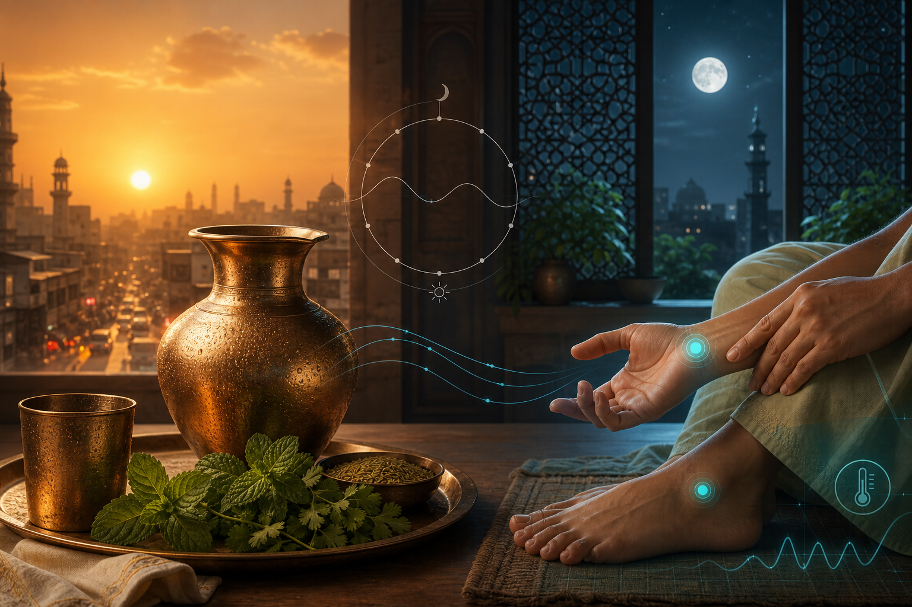

1. The Scorching Reality of 2026
According to the India Meteorological Department (IMD), May 2026 presents a paradoxical climate landscape. While widespread rainfall—projected at 110% of the long-period average (LPA)—may keep many parts of India cooler than usual, a developing "Super El Niño" is set to trigger intense heatwaves across southern, northeastern, and northwestern regions. Crucially, while May might see rain, the overall southwest monsoon is expected to be "below normal" at just 92% of the LPA, creating a season of extremes.

A critical challenge for 2026 is the intensification of the Urban Heat Island (UHI) effect. In Odisha, cities like Bhubaneswar and Cuttack have become "thermal traps" where aggressive construction and declining green cover prevent cooling. Research indicates a dangerous geographic anomaly: while daytime peaks are concerning, night-time temperatures in these urban centers are remaining up to 1.22°C warmer than surrounding rural peripheries. This lack of nocturnal cooling is a physiological hazard, as it denies the human body the recovery period required to shed daytime heat stress.
To navigate this season, we must look toward a synthesis of high-level Stanford laboratory research and the enduring traditions of Ayurveda.
2. The Stanford Secret: Glabrous Skin and the "Radiators" in our Palms
The research of Dr. H. Craig Heller at Stanford University has revolutionized our understanding of human thermoregulation by shifting focus from the total skin surface to specialized "heat exchange" zones.
- The Discovery of Glabrous Skin: Dr. Heller’s lab identified that the primary heat exchange surfaces in humans are "glabrous skin" areas—the hairless skin of the palms, the soles of the feet, and the face. These surfaces contain unique vascular structures designed for rapid heat transfer.
- The Science of Fatigue: The Heller lab discovered that muscle fatigue is largely a temperature-regulation issue. When muscle temperature rises, work capacity fails. By extracting heat through the palms using a specialized "cooling glove," researchers achieved recovery rates and increases in physical work volume that Dr. Heller famously described as "better than steroids"—referring strictly to physical work capacity and conditioning rather than hormonal changes.
- The Ayurvedic Bridge: This modern discovery provides the biological "why" behind the ancient Ayurvedic efficacy of Padabhyanga (foot massage). By targeting the glabrous skin of the soles, traditional medicine was intuitively accessing the body’s most efficient radiator system thousands of years before the Stanford cooling glove was engineered.
3. Biological Harmony: Temperature, Sleep, and Mental Health
Temperature regulation is the silent engine driving our internal biological rhythms.
- Sleep and Memory Consolidation: Dr. Heller’s work has identified a previously unrecognized function of circadian rhythms: temperature-dependent memory consolidation. Effective cooling during sleep is essential for the brain to stabilize and process information.
- The BG-SLEEP Protocol: For women aged 40 to 55, perimenopausal hormonal shifts often disrupt this thermal balance. The "BG-SLEEP" study is currently evaluating a specific intervention: a nightly 10-minute Padabhyanga using Brahmi-Gotukola oil. To maintain technical rigor, the protocol specifies 5 minutes per foot, focusing on the center of the sole and the base of the toes to stabilize the nervous system and manage mood changes.
4. Ancient Breathwork: Practicing *Sheetali Pranayama
Yoga offers an internal cooling mechanism that leverages the physics of evaporation to lower body temperature during peak heat.
*Sidebar: How to Perform Sheetali (Cooling Breath)*
Definition: Sheetali is derived from the Sanskrit Sheetal*, meaning cooling or soothing.
Step 1: Sit in a comfortable, upright position (Sukhasana or Padmasana*).
* Step 2: Extend your tongue and roll the sides upward to form a tube.
* Step 3: Inhale slowly and deeply through the rolled tongue, feeling the chill move into the lungs.
* Step 4: Close the mouth and exhale slowly through the nostrils.
The Alternative (Sheetkari):* If you cannot roll your tongue, part your lips slightly with your teeth together. Inhale through the teeth with a hissing sound, then exhale through the nose.
* Precautions: Avoid these if you have a cold, asthma, or low blood pressure. Crucially, avoid this practice if you have hypothyroidism, as the intense cooling effect may interfere with metabolic function.
5. The Ayurvedic Lifestyle: Pacifying "Pitta"
In Ayurveda, summer is the season of Pitta (the fire element). When Pitta is provoked by external heat, it manifests as both physical inflammation and emotional irritability.
| Pitta-Provoking Signs | Pitta-Pacifying Solutions |
|---|---|
| Anger, irritability, and impatience | Consumption of sweet, cool, and fluid foods |
| Heartburn and impaired digestion | Cooling spices: Fennel, cardamom, and mint |
| Skin inflammation and joint pain | Hydrating foods: Cucumber, coconut, and aloe vera |
| Excessive sweating and burning sensations | Walking in the moonlight and daytime napping |
The Silver-Water Ritual: A traditional morning ritual involves drinking water kept overnight in a silver container. In Ayurveda, the Moon is the signifier of the water element; this ritual is believed to strengthen the immune system for both Pitta and Vata dominated individuals, balancing the "digestive fire" that slows during Greeshma Ritu (the summer season).
6. Architecture of Cool: Lessons from the Stepwell
Mitigating heat requires structural interventions that scale from the city level down to the individual dwelling.
- *The Baoli (Stepwell): Historically, these structures used airflow, shading, and evaporative cooling to reduce surrounding temperatures by up to 7°C. Modern urban initiatives, such as Odisha’s Ama Pokhari* scheme, aim to restore urban waterbodies to act as essential heat sinks.
- Traditional Facades: Beyond decoration, elements like chajjas (projecting eaves) and jaalis (perforated screens) are designed to regulate airflow and shield interiors from direct sunlight, significantly enhancing thermal comfort as evidenced by the Mehra Residence case study.
- The SACHET Defense: The National Disaster Management Authority (NDMA) now utilizes the SACHET portal for real-time, geo-targeted heat alerts. They advocate for "cool roofs" (white or high-albedo painting), which can reduce indoor temperatures by 1°C to 1.5°C.
7. Regional Reality Check: The Mumbai vs. Rajasthan Rule
A critical warning for 2026: cooling methods must match the local humidity profile.
- Dry Climates (Rajasthan/Delhi/Indore): Khus (Vetiver) curtains and air coolers are highly effective. Hot, dry air passes through wet fibers, causing water to evaporate and the temperature to drop.
- Humid Climates (Mumbai/Coastal Regions): Here, the air is already saturated. Using Khus curtains or air coolers prevents evaporation, making the environment feel sticky, uncomfortable, and suffocating. Furthermore, in high-humidity cities like Mumbai, Khus curtains are a liability; they can develop fungus within just two weeks if the moisture remains trapped. In these regions, prioritize ventilation and dehumidification.
8. Conclusion: A Holistic Toolkit for a Resilient Future
Surviving the 2026 heatwave requires us to be as scientifically rigorous as we are traditionally mindful.
Quick Wins for Heat Resilience:
- Target Heat Exchange: Cool your palms, soles, and face (glabrous skin) for the fastest reduction in core temperature.
- Internal Cooling: Practice Sheetali or Sheetkari breathwork during peak heat to soothe the nervous system.
- Adjust Your Diet: Shift to a Pitta-pacifying diet with cooling spices and silver-treated water.
- Advocate for Infrastructure: Support nature-based solutions like Odisha’s Ama Pokhari waterbody restoration and the use of jaalis in modern building design.
By recognizing that the "radiators in our palms" (Stanford) and the "wisdom in our stepwells" (India) are the twin keys to resilience, we can navigate the intensifying climate reality of 2026 with confidence.